Reference: pages
Reference
Network Cable
encodedlogistics:network_cable · Block · Stacks to 64 · Creative tab: Encoded Logistics: Cables
The basic cable, carrying lanes.perCable (default 8) lanes. This neutral cable connects to cables of every colour; dye it to keep runs apart.
Network Cable
Shift: Links network blocks together.
Works with
How to get it
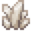
encodedlogistics:network_cable
Used to make
 24-Port L2 Switch
24-Port L2 Switch Access Terminal
Access Terminal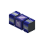
Blue Network Cable Cable Facade
Cable Facade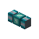
Cyan Network Cable Dense Network Cable
Dense Network Cable Drive Bay
Drive Bay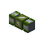
Green Network Cable Light Blue Network Cable
Light Blue Network Cable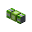
Lime Network Cable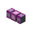
Magenta Network Cable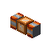
Orange Network Cable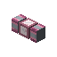
Pink Network Cable Point-to-Point Link
Point-to-Point Link Power Inlet
Power Inlet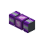
Purple Network Cable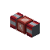
Red Network Cable Segment Isolator
Segment Isolator Trunk Port
Trunk Port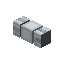
White Network Cable- Yellow Network Cable
As a block
| Hardness | 0.5 |
|---|---|
| Blast resistance | 1 |
| Tool | any |
| Light level | 0 in its default state |
Tags
#encodedlogistics:network_cables
Where it's documented
- Cables (Networks)
- Access and Fabrication Terminals (Terminals and access)
- Switches and VLANs (Networking)
- Your first network (Getting started)
- Drive Bay (Storage)
- Progression (Getting started)
- Lanes (Networks)
- Bridges and links (Networking)
- Power (Networks)
- Segments (Networks)
- Cable parts (Networks)